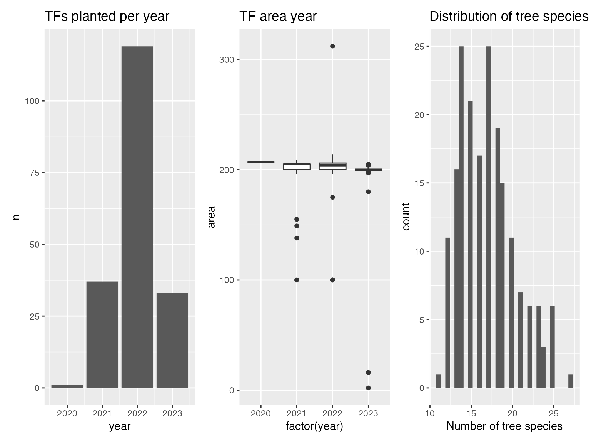
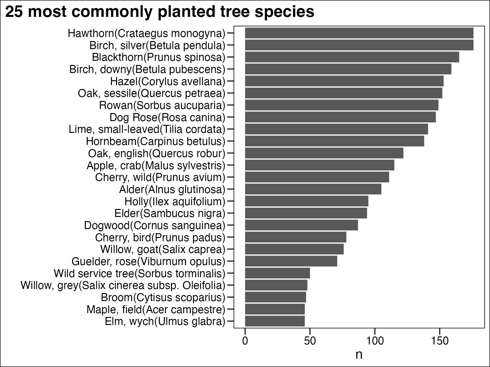
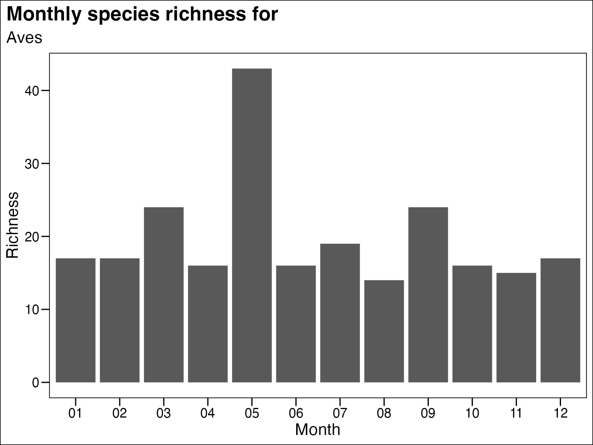

What is the tinyForestR package?
tinyForestR is a set of tools designed to extract,
manipulate and analyse data relevant to the location of Tiny Forests in
the UK.
Specifically it extracts and processes landcover and biodiversity data from a range of sources for a given area around Tiny Forest locations, and provides a set of tools for analysing citizen science data derived directly from Tiny Forests.
Getting started
The package is hosted on Github and is a work in progress. It can be
installed by running
devtools::install_github("julianflowers/tinyForestR").
The package makes use of a number of Application Programming Interfaces (APIs) some of which require API keys which will need to be applied for separately. This is outlined in the relevant sections of this vignette.
It also uses a range of Python packages to access some datasets (in
some cases Python packages are better developed than R). For this reason
the first step is to run initialise_tf() to intialise the
package.
This:
Loads
reticulatewhich R uses to talk to PythonSets up a Python virtual environment (VE) called
tinyforest, and ensures R uses the correct version of Python by specifying theRETICULATE_PYTHONenvironment variable. It may be necessary to restart R to make sure R correctly uses this.You will be asked if you want to remove the
tinyforestenvironment. Say “no” unless you have a previous installation and are having trouble. It will create a clean install of the VE.-
Installs a number of Python packages to the
tinyforestenvironment. These includeearthengine-apiwhich enables access to Google Earth Engine (GEE)geemap- a set of added value tools to extract and manipulate GEE dataosdatahub- access to Ordnance Survey National Geographic Database data.OSGridConverter- converts lat-longs to UK Grid references
Imports the relevant modules for use in other packages
Install and initialise
if(!require("tinyForestR"))
devtools::install_github("julianflowers/tinyForestR", force = TRUE)
if(!require("pacman"))install.packages("pacman")
library(tinyForestR)
p_load(leaflet.extras2, tidyverse, mapview, sf, ggmap, lubridate)
initialise_tf()
#> Virtual environment 'tinyforest' removed.
#> Using Python: /opt/homebrew/Cellar/python@3.11/3.11.3/Frameworks/Python.framework/Versions/3.11/bin/python3.11
#> Creating virtual environment 'tinyforest' ...
#> Done!
#> Installing packages: 'pip', 'wheel', 'setuptools', 'numpy'
#> Virtual environment 'tinyforest' successfully created.
#> Using virtual environment 'tinyforest' ...Load Tiny Forest data
The next step is to load Tiny Forest (TF) data. Because this only
exists in a series of web pages the get_tf_data function
identifies the relevant pages and iterates over them to extract name,
id, location, area, planters, and types of tree planted (as a list
column), for those TFs planted at the time of extraction. It does
include TFs planted outside the UK. The function takes about 30 seconds
to iterate over all the relevant pages.
tictoc::tic()
tf_data <- get_tf_data()
tictoc::toc()
tf <- read_csv("../data/tf_data.csv")
tf_df <- tf |>
unnest("trees") |>
mutate(year = year(date),
month = month(date)) Once the data is loaded we can save it as a csv file and get some high level information on planting, timings, size and so on.
As of 2023-06-06 there are 190 planted TFs.
needs(patchwork)
## annual planting
tf_year <- tf_df |>
select(-trees) |>
distinct() |>
count(year) |>
ggplot(aes(year, n)) +
geom_col() +
labs(title = "TFs planted per year")
## area distribution
tf_area <- tf_df |>
select(-trees) |>
distinct() |>
ggplot(aes(factor(year), area)) +
geom_boxplot() +
labs(title = "TF area year")
tf_trees <- tf_df |>
group_by(tf_id) |>
summarise(n_trees = n()) |>
ggplot() +
geom_histogram(aes(n_trees)) +
labs(title = "Distribution of tree species",
x = "Number of tree species")
tf_year + tf_area + tf_trees
Tree species
We can also look at planting frequency for different tree species.
tf_df |>
ungroup() |>
unnest("trees") |>
count(trees, sort = TRUE) |>
top_n(25) |>
ggplot() +
geom_col(aes(n, reorder(trees, n))) +
labs(y = "",
title = "25 most commonly planted tree species") +
ggthemes::theme_base() +
theme(plot.title.position = "plot")
Biodiversity data
tf1 <- tf_df |>
select(lat, lon, tf_id) |>
distinct()
i <- 1
lat <- tf1$lat[i]
lon <- tf1$lon[i]The get_nbn_buffer downloads occurrence data from the
NBN Atlas in a set buffer around a given longitude and latitude. For
example we can download 10000 records around lat=51.777889,
lon=-1.469139 (Witney TF).1
safe_buff <- safely(tinyForestR::get_nbn_buffer)
nbn_data <- safe_buff(lon, lat, n = 10000)
#> 4.351 sec elapsed
nbn_data$result |>
head()
#> kingdom phylum classs order family genus
#> 1 Plantae Tracheophyta Magnoliopsida Rosales Rosaceae Crataegus
#> 2 Animalia Chordata Aves Passeriformes Paridae Parus
#> 3 Plantae Tracheophyta Magnoliopsida Gentianales Rubiaceae Galium
#> 4 Plantae Tracheophyta Magnoliopsida Fabales Fabaceae <NA>
#> 5 Animalia Chordata Aves Passeriformes Turdidae Turdus
#> 6 Animalia Chordata Aves Passeriformes Turdidae Turdus
#> decimalLatitude decimalLongitude year month
#> 1 51.78306 -1.474075 2017 04
#> 2 51.78298 -1.472293 2010 10
#> 3 51.78256 -1.476333 2017 04
#> 4 51.77845 -1.465098 1968 <NA>
#> 5 51.78298 -1.472293 2010 12
#> 6 51.78298 -1.472293 2019 03
#> dataProviderName speciesGroups
#> 1 Botanical Society of Britain & Ireland Plants, FloweringPlants
#> 2 British Trust for Ornithology Animals, Birds
#> 3 Botanical Society of Britain & Ireland Plants, FloweringPlants
#> 4 Botanical Society of Britain & Ireland Plants, FloweringPlants
#> 5 British Trust for Ornithology Animals, Birds
#> 6 British Trust for Ornithology Animals, Birds
#> vernacularName species
#> 1 Midland Hawthorn Crataegus laevigata
#> 2 Great Tit Parus major
#> 3 Cleavers Galium aparine
#> 4 Bean <NA>
#> 5 Blackbird Turdus merula
#> 6 Blackbird Turdus merulaPlant diversity using BSBI data
I have also included functions to extract data for the 2020 Botanic Society of Britain and Ireland survey. This is publicly available from for UK National Grid 1k hectads. This requires conversion of lat-longs to UK grids.
grid_ref <- tinyForestR::os_lat_lon_to_grid(lat = lat, lon = lon)
#> Using virtual environment 'tinyforest' ...
grid_ref$grid
#> [1] "SP3672"
bsbi_data <- tinyForestR::get_bsbi_data(grid_ref = grid_ref$grid)
bsbi_data |>
enframe() |>
unnest("value") |>
unnest("value") |>
# slice(-c(168:173)) |>
mutate(year = str_extract(value, "20\\d{2}"),
value = str_remove(value, year),
count = parse_number(value),
value = str_remove(value, as.character(count)),
value = str_remove(value, "\\d{1,}"),
grid = grid_ref$grid,
tf_id = tf_df$tf_id[i]) |>
arrange(value) |>
drop_na()
#> # A tibble: 7 × 6
#> name value year count grid tf_id
#> <chr> <chr> <chr> <dbl> <chr> <dbl>
#> 1 records "Clinopodium ascendens() " 2018 1 SP3672 85
#> 2 records "Cochlearia danica() " 2016 1 SP3672 85
#> 3 records "Crataegus monogyna() " 2015 1 SP3672 85
#> 4 records "Cupressus × leylandii() " 2016 1 SP3672 85
#> 5 records "Galeopsis bifida() " 2015 1 SP3672 85
#> 6 records "Hesperis matronalis() " 2017 1 SP3672 85
#> 7 records "Oenothera stricta() " 2017 1 SP3672 85Rapid calculation of biodiversity metrics
The calc_bd_metrics function takes an output from
get_nbn_buffer or get_bsbi_data, converts the
data from long to wide format, creates a species matrix for a specified
class (for get_nbn_buffer data), and outputs a list
containing:
- diversity metrics (Simpson)
- species richness by month (plotted)
- Bray-Curtis matrix
- Raup matrix
metrics <- calc_bd_metrics(df = nbn_data$result, class = "Aves")
metrics$metrics
#> month richness N ratio diversity
#> 1 01 17 60 0.2833333 0.9294444
#> 2 02 17 58 0.2931034 0.9256837
#> 3 03 24 74 0.3243243 0.9382761
#> 4 04 16 56 0.2857143 0.9266582
#> 5 05 43 104 0.4134615 0.9613536
#> 6 06 16 57 0.2807018 0.9258233
#> 7 07 19 53 0.3584906 0.9284443
#> 8 08 14 41 0.3414634 0.9125521
#> 9 09 24 59 0.4067797 0.9399598
#> 10 10 16 48 0.3333333 0.9253472
#> 11 11 15 60 0.2500000 0.9205556
#> 12 12 17 58 0.2931034 0.9304400
metrics$plot +
labs(title = "Monthly species richness for ",
subtitle = paste("Aves", tf1$stub[i]),
y = "Richness",
x = "Month") +
ggthemes::theme_base() +
theme(plot.title.position = "plot")
Vegatation indices
The package includes a calc_ndvi_buff function to enable
the calculation of normalized vegetation index (NDVI) for the buffer
area around a given point. It uses Sentinel2 surface reflectance
satellite images which are available at 10m resolution and are regularly
updated. The function extracts images via the Google Earth Engine API
and requires registration and authentication prior to use (see…).
The function returns a list including, image dates, NDVI statistics for the image, an interactive map and a raster. Note it may take few minutes to run.
The code chunk below calculates the NDVI for each image containing the buffer around the Witney TF for 2019 and 2022 and maps them side-by-side. (Note, the function selects only those S2 images with cloud cover < 10%).
ndvi_2019 <- calc_ndvi_buff(lat = lat, lon = lon, dist = 1000, start_date = "2019-01-01", end_date = "2019-12-31")
ndvi_2022 <- calc_ndvi_buff(lat = lat, lon = lon, dist = 1000, start_date = "2022-01-01", end_date = "2022-12-31")
bind_rows(ndvi_2019$ndvi_stats, ndvi_2022$ndvi_stats)
ndvi_2019$map | ndvi_2022$mapThere are 25 images in 2019 with a median NDVI of 0.62, and 23 in 2022 with median NDVI of 0.64.
Environmental and ecological variables
I have included a snapshot with environmental variables for the TF dataset. This includes the age of the TF, rural-urban classification of the lower super output area containing the TF centroid, the area (m2) of public parks and allotments in the buffer taken from OS Open Greenspace data, and the area (m2) of deciduous woodland, taken from Priority Habitat Inventory data.